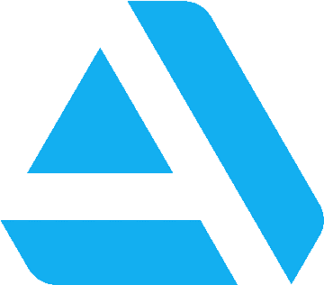
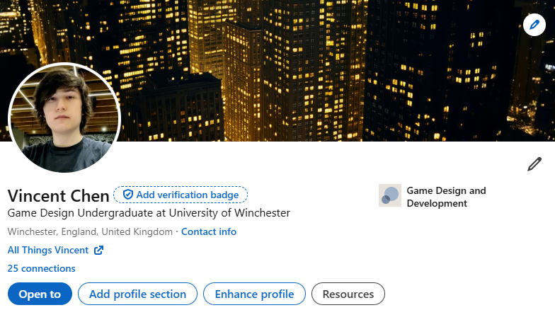
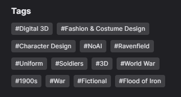
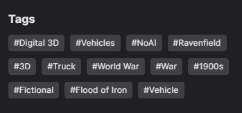
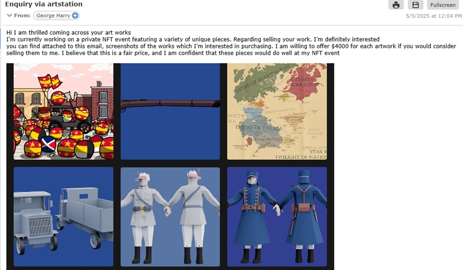
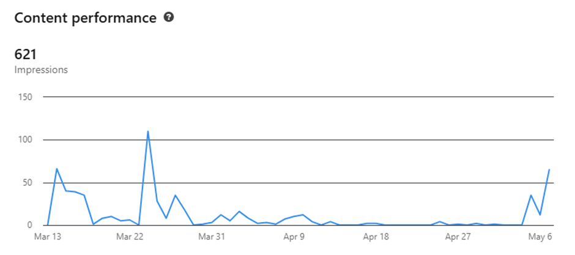

For my social media campaign, my primary interest was to create a professional brand and use the opportunity to present my visual work. Through the exposure, hopefully build up enough followers a reputation for consistent quality so to help in expanding business opportunities by attracting the interest of professionals in the game design industry. Through this, build the foundations for future connections.
Furthermore, the Campaign would be conducted with the UN Sustainable development goal 17 in mind.
Two platforms were required for the campaign, first of which being LinkedIn; the leading platform for professional business accounts worldwide, a place to show off work, interact and make connections with businesses. The other being a platform of my own choice which would be left up to research.
As LinkedIn was already a required platform, I had to figure out what secondary platform to host my art account. To narrow the selection, the platforms had to meet three criteria. Firstly, it had to be a globally used and well-known image-sharing platform with an active and young-middle aged (18-34) userbase making up around 62.3% of its users (Demandsage.com, 2025), as well as actively growing/not stagnant, so that there was a greater chance for the work to have exposure. Secondly, it had to be already frequently used by artists to present their work, so that there was assurance that it was a platform that was viable and that there would be users specifically interested in these types of accounts. Lastly, it had to be a website that is used by professionals in the industry looking to hire, which makes the platform essentially a secondary portfolio for a broader range of art.
Meanwhile, a platform like Facebook, despite still having a large percentage of young people comprising 19% of its users (Stroud, S. 2024), it has a reputation for being a "old people's platform" is also declining has youth increasingly migrate to other platforms. I briefly considered Pinterest, which although one of the larger images sharing platforms, is inundated with AI generated work (Toure, M. 2025), whilst other posts are casual and usually not the author’s own work. This complete lack of moderation coupled with the nature of the platform as generally being used more casually pushed me away from it.
I narrowed down my choices between Instagram and ArtStation. The content of both is visual in nature, easy to catch the attention of.

Instagram is a social media platform with a large array of features allowing users to personalise their account for a host of purposes, one of which being for Artists to host their work. It has a huge 2 billion monthly active users and has been growing since 2013 (Demandsage.com, 2025), making it the third largest social media platform worldwide. I had previous experience with navigating Instagram and already operated an active account on the platform, having posted regularly. Its large audience, in addition to the features like Instagram Stories and Reels could help draw in attention/freely advertise my posts. I remained apprehensive however, as Instagram is mostly used as a chatting app to keep in contact with friends and family.
ArtStation, according to its own description is a platform meant for Artists to showcase their portfolio, to find work and make connections through it. It is tailored for specifically for artists and art studios, having a reputation for being a platform for professionals in the entertainment industry. Despite this, anyone can make an account on the platform and immediately begin posting their artwork. It has a strong userbase of 16 million active users (Similarweb.com, 2025), and just in March alone there were 23.7 million visits to the site (Semrush.com, 2025). Though primarily used as a gallery, ArtStation allows artists to host their own tutorials for learning artists, sell their work on its market, create blogs discussing their artwork, and find jobs relating to their field. One problem is that posts on ArtStation rarely gets engagement such as likes and comments, so it would be difficult to gauge the success of a post on views alone.
Of the two, I leaned toward ArtStation and ultimately chose it as my platform. I had already deliberated on creating an ArtStation account for a while, and believed as it was meant for Artists that it would attract a relevant audience with interest in the work itself. I did a SWOT analysis of the website.

This campaign required us to link to SDG17. Sustainable Development Goal 17, according to the United Nations Department of Economic and Social Affairs, aims to “Strengthen the means of implementation and revitalize the Global Partnership for Sustainable Development” (United Nations 2024), aiming to build collaboration and improve upon the world through it.

SDG17 is described as “…an evolving concept based on creative assets, potentially generating economic growth, and development, holding the potential to foster income generation, job creation and export earnings while promoting social inclusion, culturally diversity and human development…” (Salenbacher , J. 2013) Which relates to my field as it is a creative field with a diverse and difficult market, and that through collaboration it can be improved upon.
For my Artstation, given that it would be difficult to build a strong following in a short amount of time, I regardless aimed to at least get up to ten-twenty followers as a start, an average of twenty-forty views and at least a comment each on my posts. This goal I set as an ideal scenario and a challenge to push myself. I needed to keep a fluid schedule, as I knew the work I would have to produce would most likely take longer than planned.
As for my LinkedIn, I would post work I did not deem in-theme for my ArtStation which gave me greater flexibility in that regard. Given that much of my attention would be focused on creating work for my ArtStation, I decided to post work created in or for the university and related in the meantime.
Having browsed around Artstation, I found that a vast majority of accounts typically either have the full names of the artist, or an online alias they are known by, with a picture of themselves or a piece of art as their avatar. Although eventually planning to make a proper logo, I chose to use an alias and a temporary image of one of my works as an image and eventually create a brand logo.

I began with a theme of fictional historically inspired assets and a dieselpunk worldbuilding, to attract a specific audience. Depending on its success, I would branch out from there – although that remains a plan for much later. Therefore, my first two posts consisted of uniforms and character designs from my fictional setting.

LinkedIn requires users to have a picture of themselves, as well as their full names. Having already created a LinkedIn account, I simply had to update some of my personal information and add a picture. I originally chose a picture of myself in front of a blank white background, but I thought it seemed too inexpressive and not likely to attract attention, so I instead used one in a livelier environment, and chose a city background for my banner.
For my initial post, I would use my RSA project to show off my Digitial 3D skills, as it was one of my better works at the time.

I also posted about the importance of Sustainable Development Goal 17 on my LinkedIn.

One way I tried to increase the views on my posts was through using many general tags that would be commonly searched up with some relation to the post, such as #war, #world war, #uniform, #sdg17, et cetera, which would show up alongside other posts in these searches, gave me the edge in spreading my work. I did this for both my LinkedIn and ArtStation posts. For consistency, the former usually had around 5-6 whereas latter were given an average of 10-15 tags. This helped in averaging my views to around 18 per post. To further build interest, I also tried to write descriptions/stories of the background of the Artstation posts in context of their world.
 Another method I considered was to figure out the best time to post. I did not have a consistent posting schedule, although I tended to post on Wednesdays or Fridays during midday.
On ArtStation, you must subscribe to ArtStation Pro, a £9.95 monthly subscription to be able to access your analytics. This meant I had to manually gather all the data from my posts. It also meant I could not check the traffic of my posts, when they were most viewed, what time, et cetera.
On ArtStation, 7 posts amounted to 173 views, with 9 likes and one comment between them. A total of 8 followers were gained through the posts.
My 3D model posts, especially the ones with character models saw a range of 20-57 views. In contrast, my art posts which were posted later saw a lower range of 13-25 views.
Expectedly, there was low engagement, especially on the later posts, with a low number of comments and likes. However, the fact I had a comment at all showed that I was going in the right direction. Most posts on ArtStation, as opposed to regular social media rarely get comments and likes despite high numbers of views. I believe a significant contributing factor to the lower views in some of the later posts was a dip in quality compared to the initial posts disincentivised people from seeing them.
Alongside this, there was also 9 separate emails regarding the purchase of my work from different people. These emails all had similar structures, from complimenting my work to requesting to purchase them. I was highly sceptical and did not reply to these, though this suggested to me three things: One, my work and posts were of the quality that was expected; two, that there were most likely a lot of scammers or bots looking to take my artwork.

One extreme example of this was a post offering $4000 per piece; the only one that had offered a price.
On LinkedIn, 5 posts amounted to 621 impressions, 91 members reached, 30 engagements between them. In addition, 25 followers.
Impressions are views for LinkedIn, meaning that my posts were getting a decent amount of attention, as well as 30 engagement meaning likes and comments combined. Members reached means the number of unique users that have seen the posts, which suggests my posts are being seen by more Users outside of my existing followership. There was a gap between the beginning of April and the beginning of May where there were low impressions, which is explained by the fact I had not been actively posting and interacting on LinkedIn over the spring break.

These trends of high engagement and impressions overall suggests that – if I more actively post on LinkedIn, I would have no issue with getting traction.
The largest issue I personally had was the ambitiousness of my posts. As I had planned on at the very least posting once a week with a medium-fidelity model, and as Artstation allows for multiple images per post, my first two posts consisted of four separate images of character/uniform models. This proved unsustainable very quickly, the model I chose first to make was a large Airship which proved to be more complicated than I had initially thought, taking weeks and remaining incompleted.

Because I was insistent on keeping theming relevant posts, this meant a lot of the smaller content I created in the meantime unrelated could not be posted on ArtStation, which left a two-week time gap where there were no new updates.
I addressed this by posting older but related pieces of work I had done to fill in the gaps, although they not 3D models as I had originally intended for all my posts to be.
In summary, I believe that this social media campaign has been a good learning experience. It was the first times I have ever used ArtStation, I found it very good for organising my work and showcasing it. Although I had not garnered a large following, I am motivated to continue in building these accounts. Through this trial and error, I feel I better understand how I should realistically set my goal instead of attempting to be overambitious.
In the future, I may also look to create an Instagram account for posting my work, to reach out to a wider audience through using Instagram’s story and reels functions, as well as being able to check analytics. I also intend to continue posting on both my Artstation and Linkedin accounts and sharing them on the other platforms to spread awareness of the other accounts.